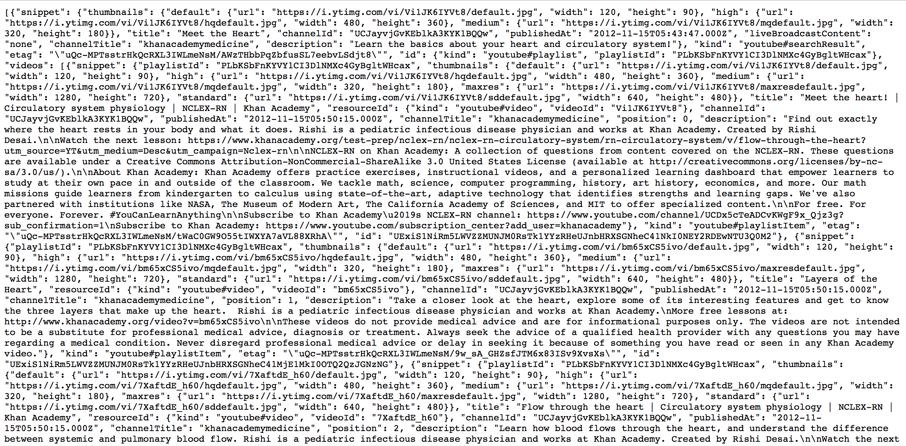

Progress Thus Far
Author: Aaron Wu (pwu8), Natalie Roe (nroe), Preston Law (plaw), Wennie Zhang (yzhang46)
What We've Accomplished
At this point, in our final project, we've created a python script to extract and clean our data from YouTube. Below is an image of part of our code that grabbed the data from the API.

The data that we grabbed pertained to the top videos on YouTube at the time we ran our data. "Top" was defined by the videos' likes to dislikes ratio. From our data, we created a visualization representing the most popular terms in the top videos on YouTube. The terms were sourced from each videos' title, tags, and description.
Afterwards, we extracted data from 4 specific channels on YouTube: Khan Standard Playlists, Khan Medicine Playlists, Khan College Admissions Playlists, and Khan SAT Playlists. We wrote a specific script to extract and clean data from those playlists. Below is an image of our data from Khan Standard Playlists:

After cleaning the data, we created a file that lists each video id, title, like count, dislike count, views, favourite count, and number of comments. Below is a snapshot of the information for a subset of the data that we collected from the channel:


Home Page # is: here .